Generated concept film. Illustrative visualization, not a completed CGC project. See actual CGC work.
CSLB C-17 · LIC #1109661 · ACTIVE · $25K CONTRACTOR’S BOND · WORKERS’ COMP ON FILE
Recent work: Ono Hawaiian BBQ, Temecula · Haven House shelter · Meritage Homes office TI (with Pacific Tusk Builders) · Esplanade Builders
01 / Before meets after
The difference is clear.
Explore three illustrated glazing concepts. Move the divider to compare. Actual CGC jobsite photographs are available below.
A new face for the building.
Illustrative concept / generated visualization
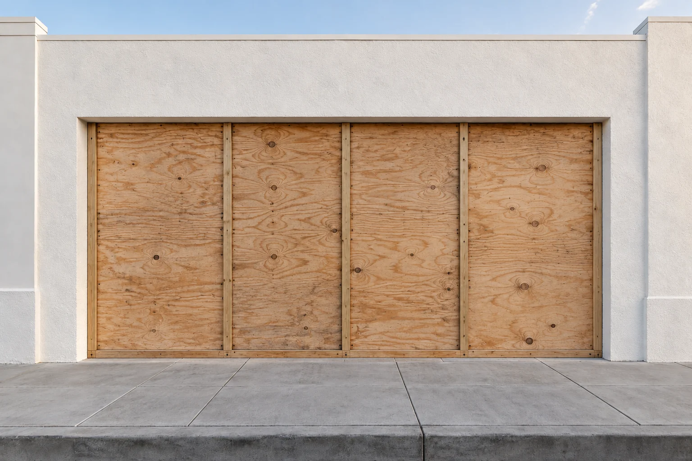
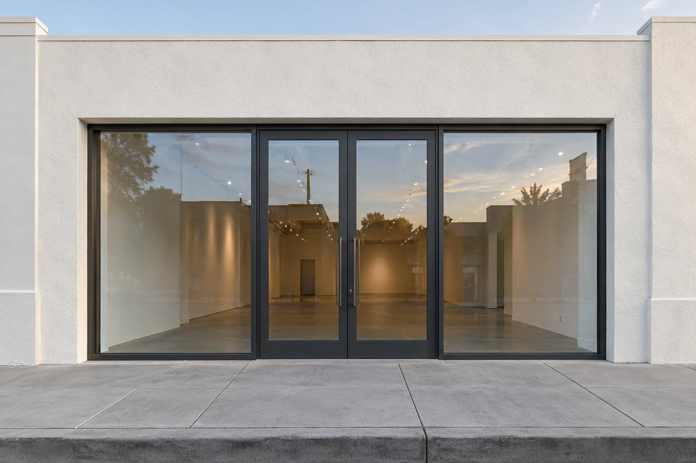
BEFOREAFTER
Storefront / from board-up to glazed entrance.
Concept visualization. Not a photograph of a CGC project.
Defined space. Open sightlines.
Illustrative concept / generated visualization
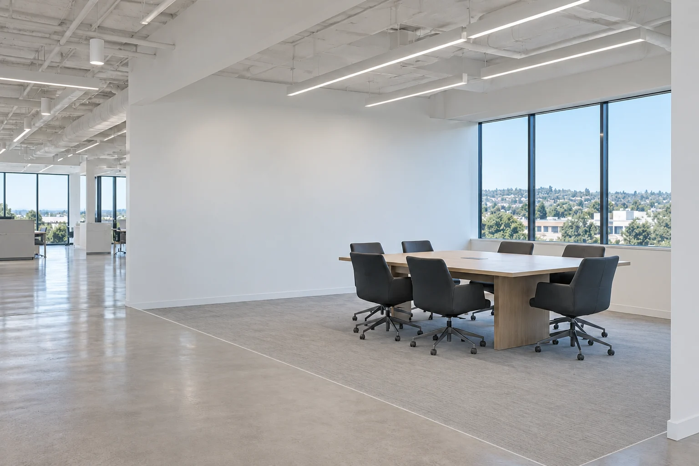
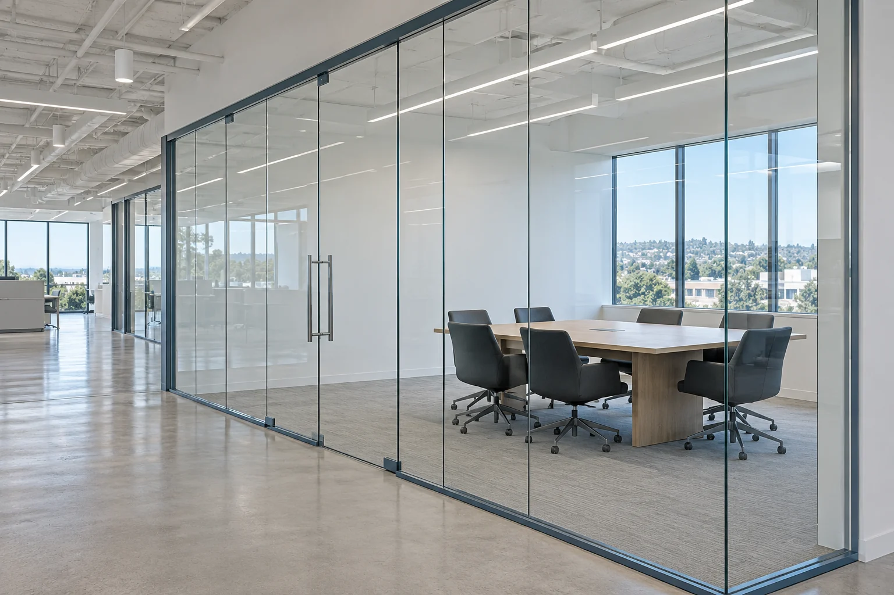
BEFOREAFTER
Office fronts / from open floor to glass enclosure.
Concept visualization. Not a photograph of a CGC project.
From boarded bays to daylight.
Illustrative concept / generated visualization
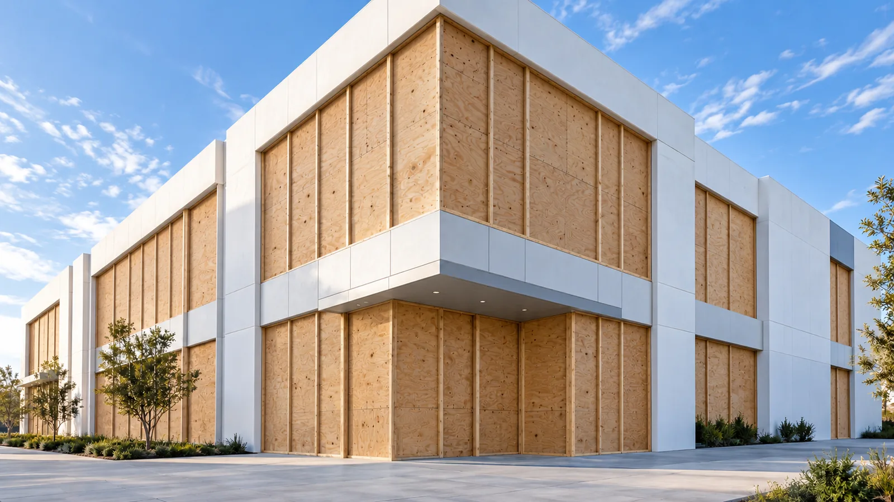
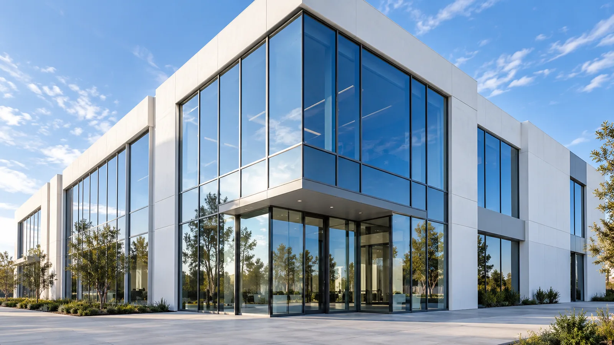
BEFOREAFTER
Curtain wall / a matched corner-building concept.
Concept visualization. Not a photograph of a CGC project.
See the actual jobsite comparisons
Original CGC photographs. The camera positions differ between visits.
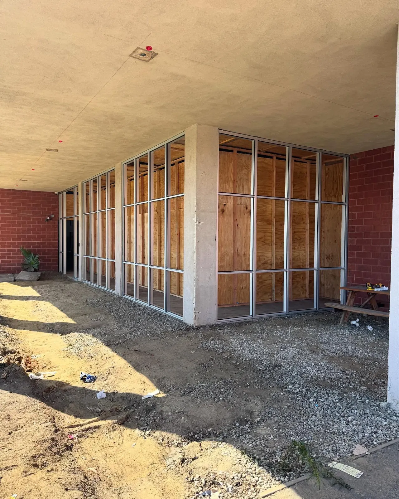
BEFOREAFTER
Corner opening: plywood-backed framing to installed glass.
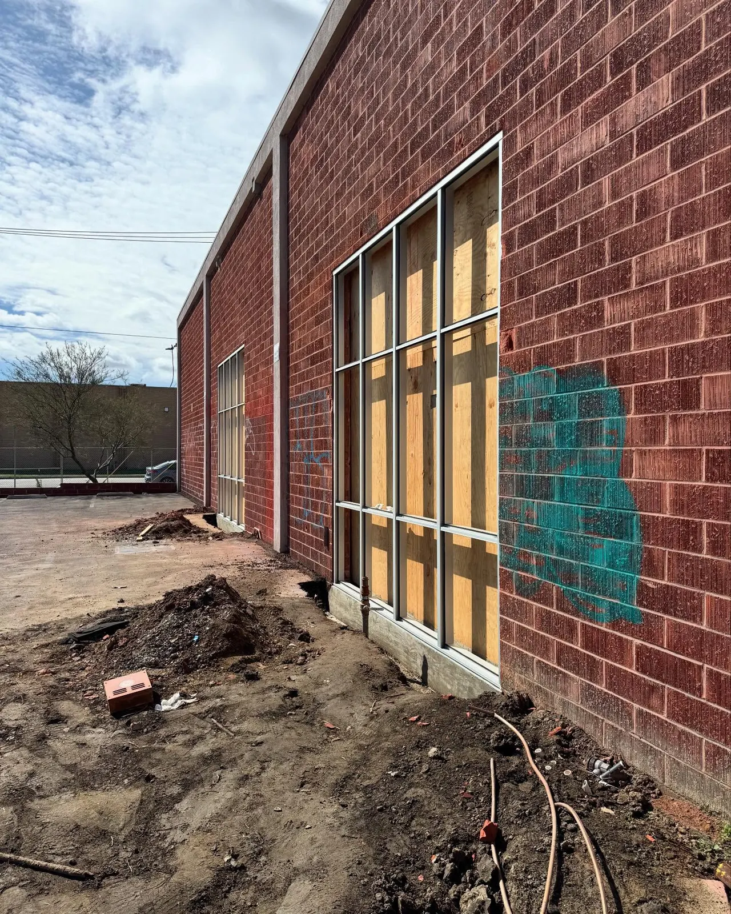
BEFOREAFTER
Brick-wall openings: boarded to glazed. Views are from different positions.
02 / What we install
One trade. All phases.
01
Storefront
Aluminum framing, glass and entrances. Measured to the opening.
Field measure
framing
glazing
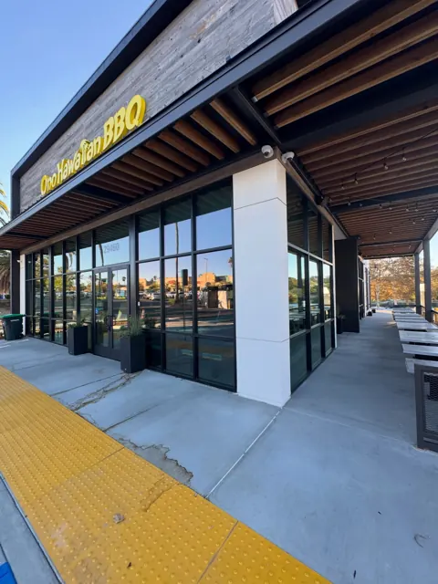
02
Curtain wall
Exterior glazing scope coordinated with the structure and building envelope.
Layout
anchorage
glazing
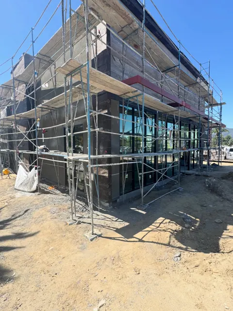
03
Interior glass & office fronts
Glass partitions and office fronts for tenant improvements.
Partitions
doors
hardware
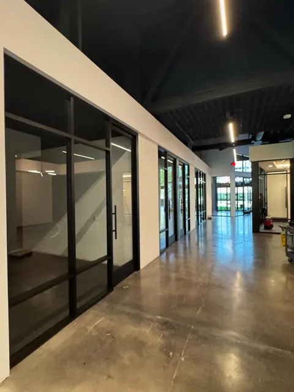
04
Entrances & doors
Commercial glass entrances with the hardware the opening needs.
Frames
door leaves
closers
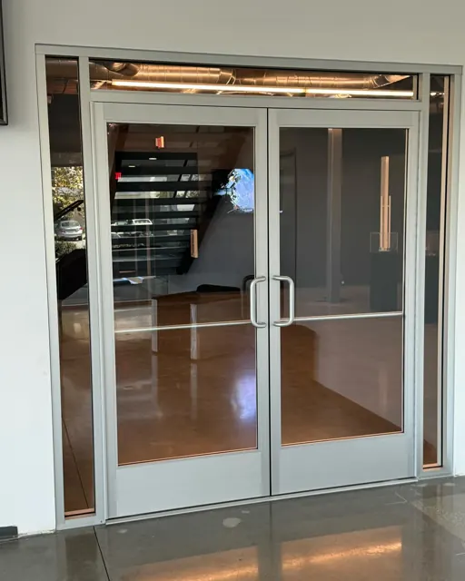
05
Service & repair
Broken glass, board-up and door closer work. Call to discuss availability.
Glass replacement
board-up
closers
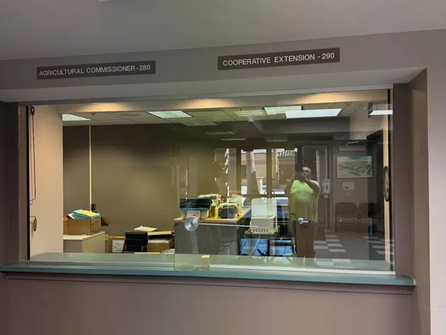
03 / Real projects. Real photographs.
From the field.
From storefronts to office fronts. The photographs and field clips in this gallery are CGC’s actual work.
Restaurant storefront with black glass frames and exterior canopy.Black-framed glass partitions along an interior corridor.Wide interior glass enclosure with floor protection.Glazed corner storefront beneath a concrete canopy.Pair of aluminum-framed glass doors with pull handles.Black-framed glass entrance beneath the Haven House sign.Row of black-framed glass offices under a suspended ceiling.Glazed service counter with the blind raised.Company rack truck parked beside a building.Close exterior view of black glass entrance doors.Scaffolding around a glazed corner and red steel canopy.Interior glass office fronts beneath exposed white roof framing.Glazed restaurant storefront with black frames and a covered walkway.Scaffolding around a building with exposed red steel columns.Black storefront frames below exposed plywood sheathing.Interior glass partition below exposed ductwork and ceiling panels.Closed blue roll-up shutter beneath the Haven House sign.Reflective storefront glass beside a covered walkway.Pair of black-framed glass entrance doors.Corner restaurant entrance with black framing and sidewalk.Restaurant glazing and canopy viewed along the side wall.Side service door and metal canopy beside a turquoise wall.Plywood enclosure beneath a concrete overhang.Brick facade with plywood-covered openings and concrete columns.Aluminum frame in a brick opening still covered with plywood.Plywood-backed aluminum frame in a brick wall.Corner of a brick building with boarded openings.Concrete columns in front of boarded storefront openings.Corner storefront framing with plywood behind the mullions.Plywood-backed storefront frame beside a concrete column.Tall aluminum frame in a boarded brick-wall opening.Long run of aluminum framing over plywood beneath an overhang.Corner aluminum storefront with dark glass installed.Aluminum entrance doors and reflective glass in a brick facade.Reflective glass lites in two brick-wall openings.Aluminum-framed corner glazing beside a concrete column.Black-framed interior glass office fronts beside a marble-pattern floor.Long corridor of black-framed interior glass partitions.Narrow black-framed door with an opaque panel and exit sign.Black-framed glazed corner with double doors.Double glass doors and transom in an interior corner.Interior glass office fronts beneath an exposed black ceiling.Glazed office corner beside a corridor with polished concrete.Service counter opening with a closed blind and chairs.Glass and aluminum frames loaded on a rack truck.Glass installed across a service counter with a closed blind behind it.Frameless interior glass panels with protective film and floor tape.Black-framed glass office doorway beside patterned carpet.Interior glass partition in front of unfinished cabinetry.Frameless glass partition with cardboard on the floor.Frameless glass corner with temporary installation markers.Long interior glass wall with protective markers on the panels.Glass office corner with materials laid on floor protection.Interior glass partition with a ladder and exposed ceiling.Frameless glass wall beside an unfinished corridor.Black storefront glazing below a plywood-sheathed facade.Two black-framed storefront openings in wood-framed construction.Black-framed glazed entrance with caution tape.Black storefront doors below exposed timber framing.Black-framed glass wall in an unfinished timber opening.Corner entrance with black framing and caution tape.Interior view of storefront glazing under exposed timber.Black-framed entrance viewed from inside an unfinished room.Black glass entrance doors with a pull handle.Interior view of a narrow glazed entrance bay.Storefront glass beyond open timber ceiling framing.Wide view of storefront glazing from an unfinished interior.Black-framed glazed doors viewed from a timber-framed room.Storefront doors and transom viewed from inside.Angled interior view of a glass entrance door.Exterior of two glazed openings below plywood sheathing.Black storefront entrance below exposed wood framing.Black-framed doors and transom with an unfinished wood header.Building facade with scaffolding and exposed steel columns.Corner glass storefront behind scaffolding.Glazed facade behind scaffolding with strong sunlight.
Field clips / glass handling and installation
Glass panels secured to a rack truck. Silent field clip.Interior glass installation with ladders and floor protection. Silent field clip.Interior glass partitions along an office corridor. Silent field clip.Black-framed interior office fronts and glass doors. Silent field clip.Frameless glass conference room under ceiling light strips. Silent field clip.
Concept film / scroll to build
Floor by floor.
Open frame
Glass set
One clean skin
Generated visualization, not a completed CGC project.
04 / From plans to punch
Plans to punch.
Send plans
Takeoff + scope sheet
Bid with clarifications / exclusions
Shop drawings & submittals
Fabricate + install
Punch & turnover
05 / Know the weight
What does the glass weigh?
Approximate glass weight
3.27 lb/ft² per 1/4″ of glass. Approximate. Verify with your supplier.
06 / Put the plans in motion
Put us on the bid list.
Plans, scope, city and a due date. Start there.
07 / Before you call
Before you send the plans.
Concept film / generated visualization. Not a completed CGC project.
Do you work as a subcontractor for general contractors?
Yes. CGC handles commercial glazing scopes for general contractors, project managers and property owners.
What areas do you cover?
CGC is based in Wildomar, California and works across Southern California.
What do you need to bid?
Send plans, the project city, glazing scope and bid due date. Include specifications, schedules and any known site constraints.
Do you handle service calls and board-up?
Commercial service work includes broken glass, board-up and door closers. Call (714) 650-4185 to discuss the opening and current availability.
Are you licensed?
Commercial Glazing Contractors Inc. holds California C-17 glazing license #1109661. The license page has the verification link, bond and workers’ compensation details. View license details.
How long will the job take?
Lead times depend on the scope, glass makeup, approvals, fabrication and site readiness. Send the project information so the schedule can be reviewed.
Does a bid request commit me to work?
No. A bid request is not a contract. Scope, price and schedule are addressed in a written agreement.